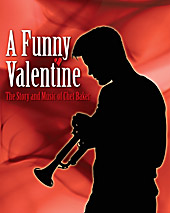

|
|
| John Muir: Rhapsody in Green |
| Indian Peter's Coffee House |
| Platero |
| A Christmas Carol |
| Italia 'n' Caledonia |
| A Funny Valentine |
| Did You Used To Be R D Laing? |
Current shows:in association with The Nuffield, Southampton A Funny ValentineReviewsThe Stage, Monday 2 March 2009 One of the many appealing things about this show is the fact that you don’t have to be a jazz aficionado to enjoy it. Frankly, the name Chet Baker meant little to this reviewer at the outset, but I filed out of the Garrick’s intimate studio theatre inspired to delve more closely into the music of the celebrated American trumpeter. Writer and narrator Mike Maran has a wonderful knack of storytelling that brings his subject matter to life. Straight away you want to know why a talented jazz musician should end his life by falling out of an Amsterdam hotel window - especially when Maran teasingly tells you that he knows how and why he fell. Because he was with him. Baker’s life and career were ruined by illegal substances and it soon emerges that our storyteller in the white linen suit represents the drugs that destroyed him. Along the way, though, we get to know a good deal about Baker, with lots of biographical information and anecdotes cleverly woven into a story that is as fascinating as it is sad. And there’s music aplenty, thanks to the on-stage presence of hugely gifted trumpeter Colin Steele and, on this occasion, Robert Pettigrew (an occasional but superb stand-in for Dave Milligan) on piano. Mike Maran, like most of those who knew Baker, it seems, is clearly enthralled by the baby-faced trumpeter who went on to captivate the jazz world, and utterly dismayed by the way he succumbed to a lifetime of drug abuse. The Herald, July 7 2009 As jazz casualties go, trumpeter Chet Baker lived it large. A self destructive, self mythologizing mummy’s boy with pin-up good looks and a honey coated croon, his monumental heroin addiction, may have robbed him of his prettiness, his gigs, and ultimately, his life, but as Mike Maran’s impressionistic biography makes clear, for the last 35 years of that life, junk was the only constant companion that mattered. Somewhere in the midst of all of this Baker managed to play some of the most beautifully languid music ever heard. Moving from the Italian prison cell where Baker was incarcerated in 1960 to the Amsterdam hotel room where he took his final fix before falling out the window, Maran sketches in a portrait with as many legends as truths. His waspish narrator may cut an angelic white-suited dash, but his avuncular engagement takes a more ambiguous turn as he is revealed to be some magical-realist personification of the companion that killed him. Underscored sweetly by Baker’s own melancholy, recreated live by respected contemporary trumpeter, Colin Steele and pianist David Milligan, their rendition of ‘Someone to Watch Over Me' lends things an even more loaded edge. While Baker afficianados will recognise every anecdote in all their contrary glory, Maran and his backing band manage to make an all to familiar junkie’s decline sound refreshingly vibrant in Patrick Sandford’s production in association with The Nuffield Theatre. Carefully structured over its two acts, the show’s pace is almost as laid back as Baker himself, and when late on a recording of Baker’s voice is heard in conversation it is a poignant moment of magic and loss to treasure. The Scotsman, July 3 2009 Mike Maran’s dramatization of the story of jazz trumpeter Chet Baker is pitched somewhere between theatre piece, concert and storytelling session and combines all these elements in absorbing and entertaining fashion. Maran stalks the stage in a white suit as the narrator who is in turn a personification of a major factor in Baker’s troubles but artistically productive life. A simple set provides a frame for the narrative which opens with the trumpeter’s death in Amsterdam in 1988 and tracks back and forth through his life, returning frequently to his imprisonment in Lucca in Tuscany in 1961. It is a poignant, moving, and often poetic tale in which Maran unpicks some of the myths surrounding the trumpeter (many seeded by Baker himself) and provides a highly sympathetic account of his achievements in thrall to the twin driving forces of his existence – nusic and heroin. His trump card lies in the on-stage collaboration with two of Scotland’s best jazz musicians, trumpeter Colin Steele (a Baker expert) and pianist David Milligan. Music is an almost constant presence whether as a vocal point of the action or as a muted compliment to Maran’s words (which have their own musical rhythm and timing in any case) and adds immeasurably to the emotional impact. It plays in Dundee tonight and Musselburgh tomnorrow and will feature as part of a focus on Baker in the opening weekend of the Edinburgh Jazz Festival. Edinburgh Evening News, July 6 2009 Colourful might be one word to describe the short but eventful life of Chesney henrey Baker Jnr. or Chet to his friends, lovers and fans. Another might be incoherent or even chaotic, however whuicheever you choose, it certainly made for a vivid tale and Mike Maran told it to the sweltering Friday night audience at The Brunton Theatre with panache and flare worthy of the subject matter. Baker was one of the finest jazz trumpet players in the world, a man who could break hearts with the soft, yearning, melancholic notes he could produce. He was also a self destructive junkie who left a mess wherever he went. Maran posited the thesis that – at least in his case – it was impossible to have one without the other. What made this production more than a lecture or a series of anecdotes about the excess of another drug-fuelled musician was Maran’s enthusiasm and contagious joy in spreading the word, but mostly it was the choice made to accompany the story with music provided by two genuine jazz talents – Dave Milligan on piano and, summoning up the spirit of Baker, Colin Steele on trumpet. Put together this lifted the show out of the ordinary and made it something magical with each revelation, each turn on the road gaining more flavour from the sweet plaintive harmonies floating over the audience. An hour and a half probably isn’t enough to cover Baker’s life in real depth, but the crowd was still taken on a journey from his childhood through his two spells in the army, his several marriages, his 18 month imprisonment in Italy, his ups and downs in Europe and America, through to hi final tragic death in Amsterdam, as well as learning fascinating snippets of information along the way, such as the fact his pianist for a time was Mussolini’s son. The props, set, and lighting were all kept simple, perfectly in line with Baker’s musical style. He was never one of jazz’s noodlers – his playing was sophisticated butr uncomplex. Maran’s storytelling also fits that description with a clear intellect behind it but never straying into analysis. In the end the audience was left with a picture of a complex, trouibled, exceptionally talented man who could inspire loyalty, adulation and exasperation all at the same time. Without doubt Baker was a great survivor, but most of the events he survived were brought about by his own hand. The triumph of this show was that the audience was sent out of the theatre with a feeling of compassion and warmth toward s a character they might have crossed the street to avoid. The show may not have broken any new ground theatrically, but it was a wonderful example of the art of storytelling and shone deserved light on an often overlooked musical figure. Maran, Milligan and Steele as well as director Parick Sandford should all be extremely proud of their achievement and hopefully future collaborations will maintain the same vibrant quality. One Suffolk, March 2009 I’ve never thought that Chet Baker fitted easily into the standard issue ‘troubled jazzman’ role. For starters, anyone playing jazz in America in the 50’s was troubled. It went with the job: booze, women and heroin. But Chet always seemed a bit different. His unusual approach to the trumpet – self taught, unorthodox technique – seemed to help rather than hinder a style that was gloriously melodic. He had the face – and here we get into really unusual territory for jazzmen – of a rock n roll star. His voice – like his trumpet playing, is emotional, unexpected and romantic. If you haven’t heard him sing before, then get on the PC now and order Chet Baker Sings from Amazon for a very reasonable £3.98. I hope by now I’ve made a case for ‘Chet Baker – not your typical jazzer’. And so to the New Wolsey on Sunday night for A Funny Valentine, a touring show that presents a vivid impression of the life, music and mysterious demise of Mr Chesney Baker Jr. Told in monologue by Mike Maran, supported by Colin Steele (trumpet) and Dave Milligan (piano) we spent 90 minutes journeying from Chet’s childhood in smalltown Oklahoma to his death outside an Amsterdam hotel. On the way we went through a number of interludes in Europe and even (bizarrely) Chet Baker - the Surrey years. This multidimensional ensemble performance weaves in and out of Chet’s life, charting minute detail (junk, court scenes, 18 months in Jail in Lucca) against a broad backdrop of Chet’s changing fortunes on the Jazz circuit – from hero to zero, and improbably back to hero again (he plays a trumpet solo on Elvis Costello's version of Shipbuilding). And all the way through, the constants are the music (beautifully rendered by the two musicians), the women, and the medicine. Mike Maran plays the role of Chet’s mysterious constant companion – with him every step of the way from his first break as Charlie Parker’s sideman to a spell as an LA cat burglar. I’m not making this up. I won’t spoil the revelation of who Mike is, or his relationship with Chet. But the show is moving, clever, witty, and always entertaining . The simple modernist staging suits the show – it’s the story that carries it, along with Mike’s effortless delivery. The superb Colin Steele ‘playing Chet playing’, drops in and out, providing background, emphasis and counterpoint. It’s a hell of a ride, and for Chet the end of the line is getting up close and personal with a concrete post on an Amsterdam street on Friday 13th May 1988. For such an unusual man, an unusual death (explained, or rather theorised tonight) does seem appropriate. The only thing missing was Chet’s voice. Impossible to reproduce I think, although we did get a snatch of audio – Chet discussing what sounds like his recipe for speedball. I prefer to remember the man singing Look for the Silver Lining. A great story brilliantly presented and performed. Quality entertainment. Young and Serious, December 2 2009 |
|  |
|
|
| More about this show: |
| Tour Dates |
| Reviews |
| Photos |